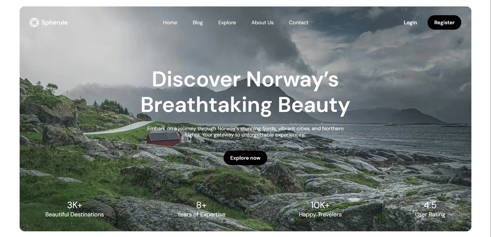
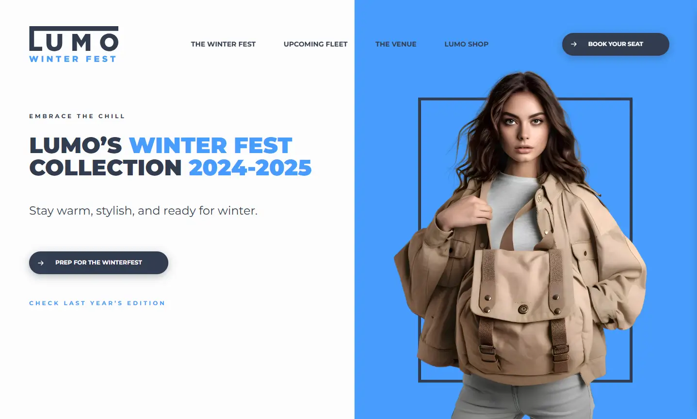
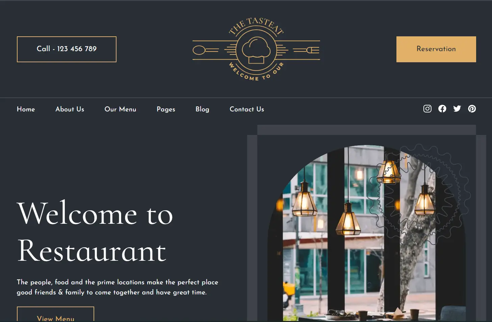
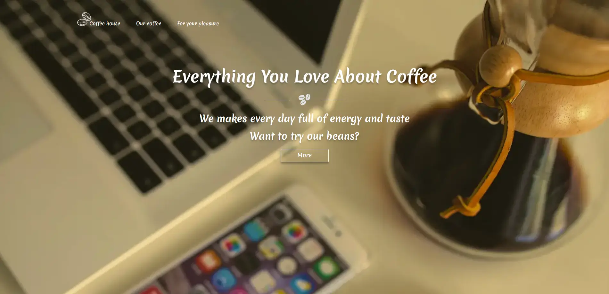

tk
Tina Kovalova
Markup developer passionate about building responsive, accessible web interfaces using semantic HTML, modern CSS and layout techniques.
Download CV
Selected work
PureBrush
HTML, SCSS, JS

spherule
HTML, SCSS, JS

Lumo WINTER FEST
HTML, SCSS, JS

The Tasteat
HTML, SCSS, JS

Coffee house
HTML, SCSS